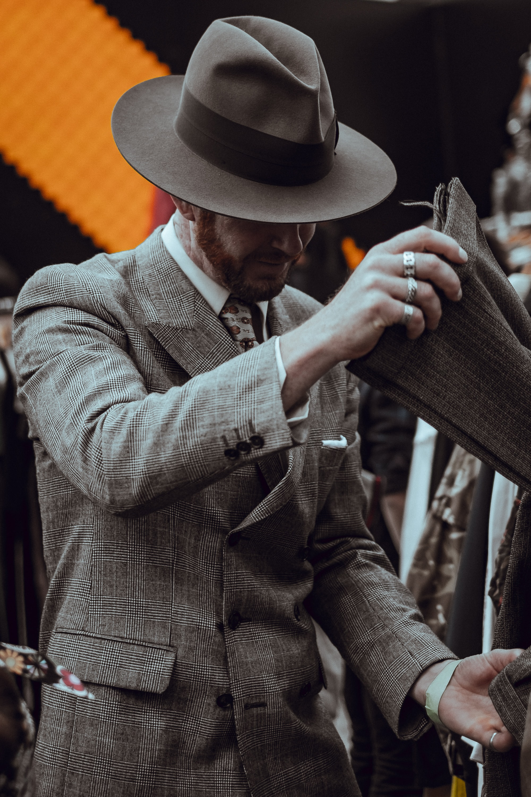

정장 소개
ENGLISH CUT영국식 정장
ENGLISH CUT 영국에서 비롯되어 예전 승마시절, 말에 앉을때 편안하게 앉기위해 듀얼 트임을 사용한것을 그대로 가져온 형태이다. 승마를 하지 않는 지금은 남성의 몸에 잘 맞고, 보다 슬림하게 보이기 위해 사용합니다. 보통 맞춤정장은 잉글리쉬컷으로 제작된다. 특징은 어깨 패드를 아예 넣지 않거나 혹은 티가 나지 않도록 넣고, 라펠은 노치 라펠, 피크트 라펠, 혹은 얇은 라펠을 사용합니다. 허리라인은 가늘게 잡아주되 너무 타이트하지 않도록 합니다. 포켓은 보편적으로 뚜껑이 달려있는 플랫을 사용하고 뒷트임은 듀얼 트임을 합니다. 보다 슬림한 핏을 보여주는 것이기에 비율이 좋아보이고, 키가 조금 더 커보이는 장점이 있습니다. 하지만 그만큼 몸에 잘 맞아야하고, 기성복을 찾기 힘듭니다.
AMERICAN CUT미국식 정장

AMERICAN CUT 미국인의 정서가 그대로 드러나는 슈트. 영국에서 건너온 테일러드 슈트를 자신만의 방식으로 바꾸었으며, 슬림하거나 타이트한 핏 보다는 활동성과 여유로움을 선호하는 방식의 맞춤정장이 사랑받습니다. 핸드메이드로 정성스럽게 만드는것보다 대량생산이 가능한 장식을 우선으로하며 허리라인 없이 일자로 떨어지는 실루엣 반듯하고 긴 라펠 가운데가 벌어지는 센터벤 디테일이 아메리칸 컷에서 볼 수 있는 특징입니다. 아메리칸 컷의 초기는 직선형 라인의 딱 떨어지는 느낌으로 형식적이며 딱딱한 스타일이었습니다. 이후 1차 세계대전을 겪으면서 군복의 실용성과 기능적인면에서 모티브를 발견해 영국 복식을 쉽게 수용한것이 아메리칸 컷 라인이라고 할 수 있습니다. 최근에는 허리라인이 들어가기 시작하고 있습니다. 편안함을 중요시하는 중장년층에게 맞는 스타일입니다.
ITALIAN CUT이탈리아식 정장

ITALIAN CUT 제냐, 로로피아나 같은 유명 원단 업체들이 포진하고 있어 최근에 남성복 패션 강국이 되었으며 지중해의 반도국가로 한국과 비슷한 기후를 가지고 있어 한국인의 취향과 서로 비슷한 것 같습니다. 3대 수트 브랜드인 체사레 아톨리니, 키톤, 브리오니가 모두 이탈리아 브랜드인것을 보면 최근의 남성복 트랜드를 알 수있습니다. 영국의 고딕한 스타일과 반대로 여성스러운 곡선미를 강조합니다. 그리고 최대한 형태를 유지하면서 가볍게 만들기 위하여 심지, 패드, 안감들의 기술과 핸드메이드 바느질 기술을 많이 발전시켰습니다. 영국의 새빌로 비스포크 수트의 기술을 이탈리아 현지에 맞도록 현지화 시켰으며 공업화, 산업화하여 부피를 키워 현재의 남성패션을 선도하고 있습니다. 비스포크 수트의 정통성을 디자인 감각으로 새로운 변화를 많이 하고 있습니다. 하지만 그만큼 변화도 빨라 짧은 기간에 맞춤 수트의 착복 기간이 짧은 경향이 있고, 보여주기식 변화가 너무 많아 수트의 본질을 놓치는 경향이 있습니다. 허리 곡선을 강조하면서 앞판은 심지가 과하게 들어가지 않아 부드럽고 활동성을 강조한 느낌입니다.